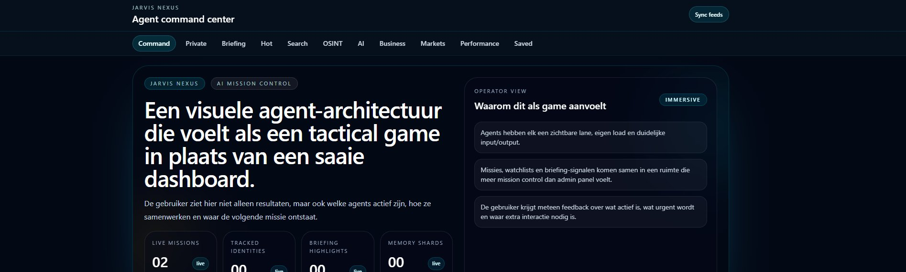

AGENTS · SPRAAK · GEBAREN
Jarvis
Een handsfree AI-command center: een visuele agent-architectuur die aanvoelt als een tactical game, bestuurd met klappen, stem en handgebaren.
RESULTAAT
3 handsfree besturingswijzen — klap, stem én handgebaren — op een lokaal brein.

01 HET PROBLEEM
Een chatvenster is passief. Ik wilde een assistent die je zíét werken — welke agents actief zijn, hoe ze samenwerken en waar de volgende actie ontstaat — en die je handsfree bestuurt.
02 WAT HET DOET
- Agent command center
- Een Nexus-Core orkestreert gespecialiseerde agents (research, briefing, geheugen, risico) — elk met een eigen lane, load en duidelijke input/output. Meer mission control dan admin-paneel.
- Klapbesturing
- 2× kort klappen opent je dashboards, muziek en editor; 3× klappen stelt een gesproken vraag aan je kennisbank. Volledig handsfree.
- Stem in het Vlaams
- Spraakinvoer en gesproken antwoorden in het Nederlands van hier.
- Handgebaren
- Een aparte versie bestuurt de interface met handgebaren via de camera.
- Lokaal brein
- Draait op lokale AI, zodat je gesprekken en data op je eigen machine blijven.
03 WAT IK ERVAN LEERDE
Handsfree bediening dwingt je om intentie simpel te maken: een klap, een gebaar, een zin. De echte uitdaging zat niet in de features maar in betrouwbaar herkennen en meteen duidelijke feedback geven.
INTERESSE?
Laten we praten.
Vertel me wat je ervan vindt — of wat je ermee zou willen doen.